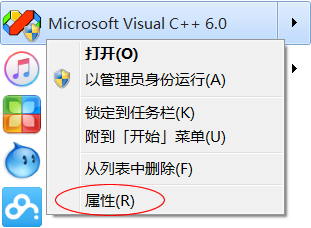
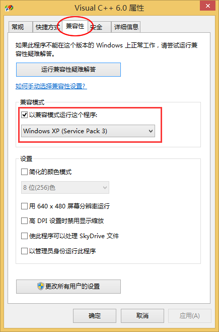
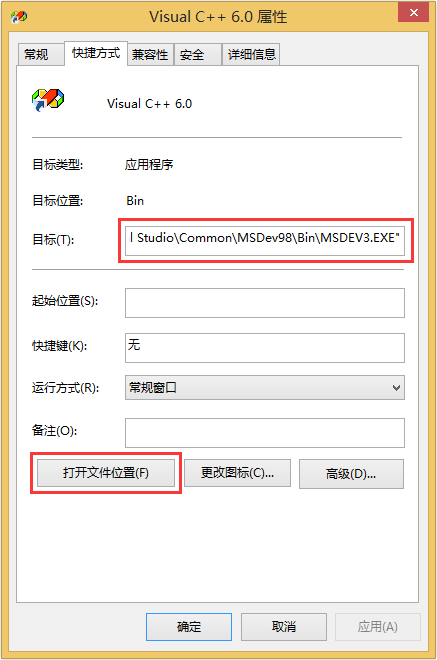
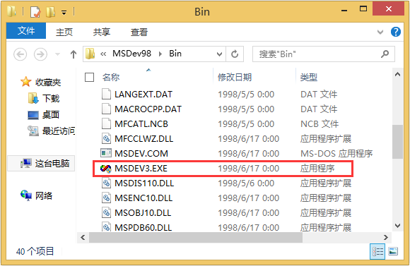
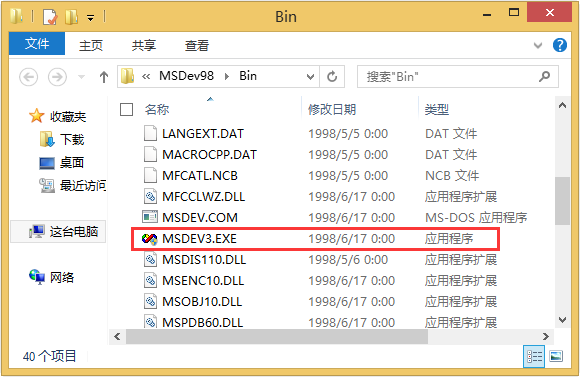
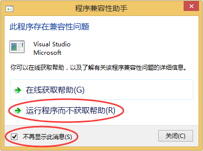

VC6.0（VC++6.0）下载地址和安装教程（图解）
截止到2016年07月06日，C语言中文网提供的VC6.0安装包，下载量已超过150万次，收到反馈超过300条。
微软原版的 VC6.0 已经不容易找到，网上提供的都是经过第三方修改的版本，删除了一些使用不到的功能，增强了兼容性。这里我们使用 VC6.0 完整绿色版，它能够支持一般的 C/C++ 应用程序开发以及计算机二级考试。
VC6.0 完整绿色版下载地址1：https://pan.baidu.com/s/1nxee1AD 提取密码：wdhk
VC6.0 完整绿色版下载地址2：https://pan.baidu.com/s/1qZGYtiO 提取密码：ix5p
该软件仅 31M，下载快速，安装简单，无需设置各种组件，还能够卸载干净。
VC6.0 能够在 XP 下很好的运行，无需进行额外的设置，但在 Win7、Win8 和 Win10 下，安装完成后还要修改兼容模式才可以。
在 VC6.0 的快捷方式或开始菜单上单击鼠标右键，选择“属性”：
在弹出的对话框中，将兼容模式修改为Windows XP SP3 或 SP2，如下图所示：
兼容模式从Windows XP开始提出，目的是让旧版的软件能够运行在较新的操作系统上，和虚拟机的原理有点类似。
MSDEV.EXE 是 VC6.0 的主程序，位于 VC6.0 的安装目录下，可以在属性面板中快速找到 MSDEV.EXE，请看下图：
重命名完成后，还要修改快捷方式指向的目标文件，也就是图3中第一个红色方框圈起来的地方。最后，按照前面介绍的方法再将兼容模式修改为“Windows XP SP3”。
启动VC6.0，如果报错，关闭后再次启动，一般就正常了。成功启动一次后，以后就可以正常运行了。
如果依然启动失败，可以尝试将 MSDEV.EXE 改为其他名字。
在VC6.0运行过程中，如果弹出下面的兼容性提示框，勾选“不再显示此消息”，关闭即可。
通过以上的设置如果还不能使用，那么请更换其它编译器，或者安装 Windows XP 吧，实在是没办法了。VC 6.0 太老了，在高版本的 Windows 系统中有时候就是死活都用不了，谁也没辙，微软早就不维护它了，也不再对它进行升级或者打补丁了，只能说明你的教学资料或者教学体制太落后了。
微软原版的 VC6.0 已经不容易找到，网上提供的都是经过第三方修改的版本，删除了一些使用不到的功能，增强了兼容性。这里我们使用 VC6.0 完整绿色版，它能够支持一般的 C/C++ 应用程序开发以及计算机二级考试。
VC6.0 完整绿色版下载地址1：https://pan.baidu.com/s/1nxee1AD 提取密码：wdhk
VC6.0 完整绿色版下载地址2：https://pan.baidu.com/s/1qZGYtiO 提取密码：ix5p
该软件仅 31M，下载快速，安装简单，无需设置各种组件，还能够卸载干净。
VC6.0 能够在 XP 下很好的运行，无需进行额外的设置，但在 Win7、Win8 和 Win10 下，安装完成后还要修改兼容模式才可以。
在Win7或Win10下使用VC6.0
对于Win7和Win10，需要将VC6.0的兼容模式修改为 Windows XP SP3 或 SP2，下面是具体的操作步骤。在 VC6.0 的快捷方式或开始菜单上单击鼠标右键，选择“属性”：

图1：在VC6.0的开始菜单上单击鼠标右键
图1：在VC6.0的开始菜单上单击鼠标右键
在弹出的对话框中，将兼容模式修改为Windows XP SP3 或 SP2，如下图所示：

图2：设置为兼容 Windows XP（Service Pack 3）
图2：设置为兼容 Windows XP（Service Pack 3）
兼容模式从Windows XP开始提出，目的是让旧版的软件能够运行在较新的操作系统上，和虚拟机的原理有点类似。
在Win8下使用VC6.0
相比Win7和Win10，Win8稍微麻烦一些，要先将 MSDEV.EXE 重命名为 MSDEV3.EXE，再按照上面的步骤设置兼容模式。MSDEV.EXE 是 VC6.0 的主程序，位于 VC6.0 的安装目录下，可以在属性面板中快速找到 MSDEV.EXE，请看下图：

图3：快速定位 MSDE.EXE

图4：将 MSDEV.EXE 改成 MSDEV3.EXE
图3：快速定位 MSDE.EXE

图4：将 MSDEV.EXE 改成 MSDEV3.EXE
重命名完成后，还要修改快捷方式指向的目标文件，也就是图3中第一个红色方框圈起来的地方。最后，按照前面介绍的方法再将兼容模式修改为“Windows XP SP3”。
启动VC6.0，如果报错，关闭后再次启动，一般就正常了。成功启动一次后，以后就可以正常运行了。
如果依然启动失败，可以尝试将 MSDEV.EXE 改为其他名字。
在VC6.0运行过程中，如果弹出下面的兼容性提示框，勾选“不再显示此消息”，关闭即可。

图5：兼容性提示框
图5：兼容性提示框
最后的总结
VC6.0可以在 XP 下完美运行，不用进行额外的设置。在Win7和Win10下，设置兼容模式才可以运行。Win8相对麻烦一些，要先修改 MSDEV.EXE 的名字，再设置兼容模式。通过以上的设置如果还不能使用，那么请更换其它编译器，或者安装 Windows XP 吧，实在是没办法了。VC 6.0 太老了，在高版本的 Windows 系统中有时候就是死活都用不了，谁也没辙，微软早就不维护它了，也不再对它进行升级或者打补丁了，只能说明你的教学资料或者教学体制太落后了。
关注公众号「站长严长生」，在手机上阅读所有教程，随时随地都能学习。内含一款搜索神器，免费下载全网书籍和视频。

微信扫码关注公众号